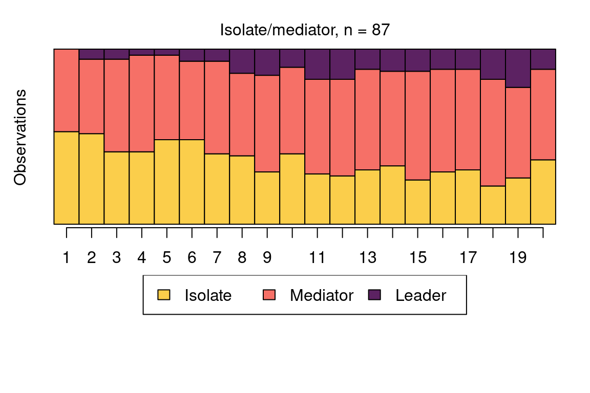
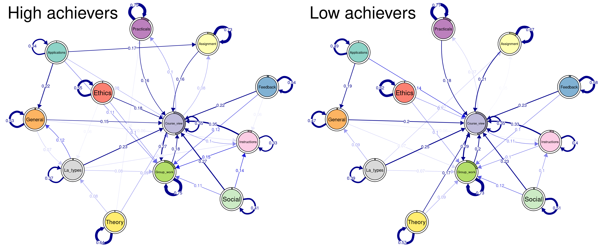

12 A Modern Approach to Transition Analysis and Process Mining with Markov Models in Education
Abstract
This chapter presents an introduction to Markovian modelling for the analysis of sequence data. Contrary to the deterministic approach seen in the previous sequence analysis chapters, Markovian models are probabilistic models, focusing on the transitions between states instead of studying sequences as a whole. The chapter provides an introduction to this method and differentiates between its most common variations: first-order Markov models, hidden Markov models, mixture Markov models, and mixture hidden Markov models. In addition to a thorough explanation and contextualisation within the existing literature, the chapter provides a step-by-step tutorial on how to implement each type of Markovian model using the R package seqHMM. The chapter also provides a complete guide to performing stochastic process mining with Markovian models as well as plotting, comparing and clustering different process models.
1 Introduction
In the previous two chapters, we have learned about sequence analysis [1, 2] and its relevance to educational research. This chapter delves into a closely-related method: Markovian models. Specifically, we focus on a particular type of Markovian model, where the data are assumed to be categorical and observed at discrete time intervals, as per the previous chapters about sequence analysis, although in general Markovian models are not restricted to categorical data. One of the main differences between sequence analysis and Markovian modelling is that the former relies on deterministic data mining, whereas the latter uses probabilistic models [3]. Moreover, sequence analysis takes a more holistic approach by analysing sequences as a whole, whereas Markovian modelling focuses on the transitions between states, their probability, and the reasons (covariates) which explain why these transitions happen.
We provide an introduction and practical guide to the topic of Markovian models for the analysis of sequence data. While we try to avoid advanced mathematical notations, to allow the reader to continue to other, more advanced sources when necessary, we do introduce the basic mathematical concepts of Markovian models. When doing so, we use the same notation as in the R package seqHMM [4], which we also use in the examples. In particular, we illustrate first-order Markov models, hidden Markov models, mixture Markov models, and mixture hidden Markov models with applications to synthetic data on students’ collaboration roles throughout a complete study program.
The chapter proceeds to describe the theoretical underpinnings on each method in turn, then showcases each method with code, before presenting some conclusions and further readings. In addition to the aforementioned applications to collaboration roles and achievement sequences, we also provide a demonstration of the utility of Markovian models in another context, namely process mining. In the process mining application, we leverage Markov models and mixture Markov models to explore learning management system logs. Finally, we conclude with a brief discussion of Markovian models in general and provide some recommendations for further reading of advanced topics in this area as a whole.
2 Methodological Background
2.1 Markov model
The simple first-order Markov chain or Markov model (MM) can be used to model transitions between successive states. In the first-order MM, given the current observation, the next observation in the sequence is independent of the past —this is called the Markov property (the order of MM determines on how many previous observations the next observation depends on). For example, when predicting a student’s school success in the fourth year under a first-order model, we only need to consider their success in the third year, while their success in the first and second year give no additional information for the prediction (see Figure 12.1 for an illustration). As such, the model is said to be memoryless.
As an example, consider the data described in Table 12.1 which includes four sequences of length ten. The alphabet — that is, the list of all possible states appearing in the data — consists of two types of observed state; low achievement success (\(L\)) and high achievement (\(H\)). Here, the individuals are assumed to be independent from one another:
| 1 | 2 | 3 | 4 | 5 | 6 | 7 | 8 | 9 | 10 | |
|---|---|---|---|---|---|---|---|---|---|---|
| A | L | L | L | H | L | H | L | H | H | H |
| B | L | H | H | L | H | L | H | L | L | H |
| C | H | H | L | H | L | L | H | L | H | H |
| D | H | H | L | L | L | H | L | L | L | H |
Say \(t\) describes the position in the sequence, or in this example, the year (in other words, here \(t\) runs from 1 to 10). If we assume that the probability of observing \(L\) or \(H\) at any given point \(t\) depends on the current observation only, we can estimate the transition probabilities \(a_{LL}\) (from state \(L\) to state \(L\)), \(a_{LH}\) (\(L\) to \(H\)), \(a_{HL}\) (\(H\) to \(L\)), and \(a_{HH}\) (\(H\) to \(H\)) by calculating the number of observed transitions from each state to all states and scaling these with the total number of transitions from that state. Mathematically, we can write the transition probability \(a_{rs}\) from state \(r\) to state \(s\) as
\[a_{rs}=P(z_t = s\,|\,z_{t-1} = r), \ s,r \in \{L,H\},\]
which simply states that the observed state \(z_t\) in year \(t\) being \(L\) or \(H\) depends on which of the two states were observed in the previous year \(t-1\). For example, to compute \(a_{LH}=P(z_t=H\,|\,z_{t-1}=L)\), the probability of transitioning from the origin state \(L\) to the destination state \(H\), we divide the eight observed transitions to state \(H\) from state \(L\) by 20, which is the total number of transitions from \(L\) to any state.
The basic MM assumes that the transition probabilities remain constant in time (this property is called time-homogeneity). This means, for example, that the probabilities of transitioning from the low-achievement state to the high-achievement state is the same in the ninth year as it was in the second year. We can collect the transition probabilities in a transition matrix (which we call \(A\)) which shows all of the possible transition probabilities between each pair of origin and destination states, as illustrated in Table 12.2. For example, when a student has low achievement in year \(t\), they have a 40 percent probability to have low achievement in year \(t+1\) and a higher 60 percent probability to transition to high achievement instead, regardless of the year \(t\). Notice that the probabilities in each row must add up to 1 (or 100%).
| \(\to\) Low | \(\to\) High | |
|---|---|---|
| Low \(\to\) | 8/20 = 0.4 | 12/20 = 0.6 |
| High \(\to\) | 10/16 = 0.625 | 6/16 = 0.375 |
Lastly, we need to define probabilities for the starting states of the sequences, i.e., the initial probabilities \[\pi_s=P(z_1 = s), \ s \in \{L,H\}.\]
In the example, half of the students have low achievement and the other half have high achievement in the first year, so \(\pi_L=\pi_H = 0.5\). This basic MM is very simple and is often not realistic in the context of educational sciences. We can, however, extend the basic MM in several ways.
First of all, we can include covariates to explain the transition and/or initial probabilities. For example, if we think that transitioning from low to high achievement becomes more challenging as the students get older we may add time as an explanatory variable to the model, allowing the probability of transitioning from low to high achievement to decrease in time. We could also increase the order of the Markov chain, accounting for longer histories. This may be more realistic, but at the same time increasing the order makes the model considerably more complex, the more so the longer the history considered.
Secondly, one of the most useful extensions is the inclusion of hidden (or latent) states that cannot be observed directly but can be estimated from the sequence of observed states. An MM with time-constant hidden states is typically called the mixture Markov model (MMM). It can be used to find latent subpopulations, or in other words, to cluster sequence data. A model with time-varying hidden states is called the hidden Markov model (HMM), which allows the individuals to transition between the hidden states. Allowing for both time-constant and time-varying hidden states leads to a mixture hidden Markov model (MHMM). Unless otherwise specified, from now on when talking about hidden states we refer always to time-varying hidden states, while time-constant hidden states are referred to as clusters.
2.2 Mixture Markov model
Consider a common case in sequence analysis where individual sequences are assumed to be clustered into subpopulations such as those with typically high and low achievement. In the introductory sequence analysis chapter, the clustering of sequences was performed based on a matrix of pairwise dissimilarities between sequences. Alternatively, we can use the MMM to group the sequences based on their initial and transition probabilities, for example, into those who tend to stay in and transition to high achievement states and those that tend to stay in and transition to low achievement states, as illustrated in Table 12.3.
Table 3. Two transition matrices showing the probabilities of transitioning from one state of achievement to another in two clusters of Low achievement and High achievement. The rows and columns describe the origin state and the destination state, respectively.
| Cluster: Low achievement | \(\to\) Low | \(\to\) High |
|---|---|---|
| Low \(\to\) | 0.8 | 0.2 |
| High \(\to\) | 0.4 | 0.6 |
| Cluster: High achievement | \(\to\) Low | \(\to\) High |
|---|---|---|
| Low \(\to\) | 0.6 | 0.4 |
| High \(\to\) | 0.1 | 0.9 |
In MMMs, we have a separate transition matrix \(A^k\) for each cluster \(k\) (for \(k=1,\ldots,K\) clusters/subpopulations), and the initial state distribution defines the probabilities to start (and stay) in the hidden states corresponding to a particular cluster. This probabilistic clustering provides group membership probabilities for each sequence; these define how likely it is that each individual is a member of each cluster. We can easily add (time-constant) covariates to the model to explain the probabilities of belonging to each cluster. By incorporating covariates in this way we could, for example, find that being in a high-achievement cluster is predicted by gender or family background. However, we note that this is distinct from the aforementioned potential inclusion of covariates to explain the transition and/or initial probabilities.
An advantage of this kind of probabilistic modelling approach is that we can use traditional model selection methods such as likelihood information criteria or cross-validation for choosing the best model. For example, if the number of subpopulations is not known in advance —as is typically the case— we can compare models with different clustering solutions (e.g., those obtained with different numbers of clusters, different subsets of covariates, or different sets of initial probabilities, for example) and choose the best-fitting model with, for example, the Bayesian information criterion (BIC) [5].

2.5 Multi-channel sequences
There are two options to analyse multi-channel (or multi-domain or multi-dimensional) sequence data with Markovian models. The first option is to combine observed states in different channels into one set of single-channel sequences with an expanded alphabet. This option is simple, and works for MMs, HMMs, MMMs, and MHMMs, but can easily lead to complex models as the number of states and channels increases considerably. The second option, which can only be used when working with HMMs and MHMMs, is to treat the observed states in each channel independently given the current hidden state. This can be easily performed by defining multiple emission probability matrices, one for each channel. The assumption of conditional independence simplifies the model, but is sometimes unrealistic, in which case it is better to resort to the first option and convert the data into single-channel sequences. Both options are discussed further in Chapter 13 [8], a dedicated chapter on multi-channel sequences, where applications of distance-based and Markovian clustering approaches are presented. In this chapter, we henceforth focus on single-channel sequences.
2.6 Estimating model parameters
The model parameters, i.e. the elements of the initial probability vectors \(\pi\), transition probability matrices \(A\), and emission probability matrices \(B\), can be estimated from data using various methods. Typical choices are the Baum-Welch algorithm (an instance of the expectation-maximisation, i.e., the EM algorithm) and direct (numerical) maximum likelihood estimation. It is possible to restrict models, for example, by setting some parameters to fixed values (typically zeros), for example, to make certain starting states, transitions, or emissions impossible.
After the parameter estimation, in addition to studying the estimated model parameters upon convergence, we can, for example, compute cluster-membership probabilities for each individual and find the most probable paths of hidden state sequences using the Viterbi algorithm ([9]). These can be further analysed and visualised for interpretation.
3 Review of the literature
Markovian methods have been used across several domains in education and have gained renewed interest with the surge in learning analytics and educational data mining. Furthermore, the introduction of specialised R packages (e.g., seqHMM [10]) and software applications (e.g., Mplus [11, 12]) have made it easier to implement Markov models. One of the most common applications of Markovian methods is the clustering of sequence data [13–15]. Markov models offer a credible alternative to existing distance-based methods (e.g. optimal matching) and can be used with different sequence types (e.g. multi-channel sequences). Furthermore, Markovian methods offer some advantages in clustering sequential data such as the inclusion of covariates that can explain why a sequence emerged (e.g., [16]). More importantly, Markovian models are relatively scalable and can be used to cluster large sequences [17]. As Saqr et al. [17] noted, large sequences are hard to cluster using standard methods such as hierarchical clustering, which is memory inefficient, and hard to parallelise or scale [18, 19]. Furthermore, distance-based clustering methods are limited by the theoretical maximum dimension of a matrix in R which is 2,147,483,647 (i.e., a maximum of 46,430 sequences). In such a case, Markovian methods may be the solution.
Examples of Markovian methods in clustering sequences are plentiful. For example, HMMs have been used to cluster students’ sequences of learning management system (LMS) trace data to detect their patterns of activities or what the authors referred to as learning tactics and strategies [15]. Another close example was that of López-Pernas and Saqr [20], who used HMMs to cluster multi-channel data of students’ learning strategies of two different tools (an LMS and an automated assessment tool). Other examples include using HMM in clustering sequences of students’ engagement states [21], sequences of students’ collaborative roles [16], or sequences of self-regulation [13, 14].
Markovian methods are also popular in studying transitions and have therefore been used across several applications and with different types of data. One of the most common usages is what is known as stochastic processes mining which typically uses first-order Markov models to map students’ transitions between learning activities. For example, Matcha et al. [22] used first-order Markov models to study students’ processes of transitions between different learning tactics. Other uses include studying the transitions between tactics of academic writing [23], between self-regulated learning events [24], or within collaborative learning settings [25]. Yet, most of such work has been performed by the pMiner R package [26], which was recently removed from The Comprehensive R Archive Network (CRAN) due to slow updates and incompatibility with existing guidelines. This chapter offers a modern alternative that uses modern and flexible methods for fitting, plotting, and clustering stochastic process mining models as well as the possibility to add covariates to understand “why” different transitions pattern emerged.
Indeed, transition analysis in general has been a popular usage for Markovian models and has been used across several studies. For instance, for the analysis of temporal patterns of students’ activities in online learning (e.g., [27]), or transitions between latent states [28], or transitions between assignment submission patterns [29].
4 Examples
As a first step, we will import all the packages required for our analyses. We have used most of them throughout the book. Below is a brief summary:
qgraph: A package for visualising networks, which can be used to plot transition probabilities [30]. This is used only for the process mining application in Section \(\ref{process}\).rio: A package for reading and saving data files with different extensions [31].seqHMM: A package designed for fitting hidden (latent) Markov models and mixture hidden Markov models for social sequence data and other categorical time series [32].tidyverse: A package that encompasses several basic packages for data manipulation and wrangling [33].TraMineR: As seen in the introductory sequence analysis chapter, this package helps us construct, analyze, and visualise sequences from time-ordered states or events [34].
library(qgraph)
library(rio)
library(seqHMM)
library(tidyverse)
library(TraMineR)Henceforth, we divide our examples into two parts: the first largely focuses on traditional uses of the seqHMM package to fit Markovian models of varying complexity to sequence data; the latter presents a demonstration of Markovian models from the perspective of process mining. We outline the steps involved in using seqHMM in general in Section \(\ref{steps}\), demonstrate the application of MMs, HMMs, MMMs, and MHMMs in Section \(\ref{markov}\), and explore process mining using Markovian models in Section \(\ref{process}\), leveraging much of the steps and code from the previous two sections. We note that different datasets are used in Section \(\ref{markov}\) and Section \(\ref{process}\); we begin by importing the data required for Section \(\ref{markov}\) and defer the importing of the data used in the process mining application to the later section.
With this in mind, we start by using the ìmport() function from the rio package to import our sequence data. Based on the description of the MHMM in [35], we used the seqHMM package to simulate a synthetic dataset (simulated_data) consisting of students’ collaboration roles (obtained from [36]) on different courses across a whole program. As the original data, the simulation was based on the two-channel model (collaboration and achievement), but we only use the collaboration sequences in the following examples, and leave the multi-channel sequence analysis to Chapter 13 [8]. While not available in the original study, we also simulated students’ high school grade point average (GPA, for simplicity categorised into three levels) for each student, which will be used to predict cluster memberships. Using this data, we show how the seqHMM package can be used to analyse such sequences. We start with the simple MM, and then transition to HMMs and their mixtures. To be able to use the seqHMM functions, we need to convert the imported data to a sequence using the function seqdef() from the TraMineR package (see Chapter 10 [1] for more information about creating stslist objects). We subsequently assign a colour palette to each state in the alphabet for later visualisations using the function cpal(). Finally, we can also extract the covariate information separately (cov_data).
URL <- "https://github.com/sonsoleslp/labook-data/raw/main/"
simulated_data <- import(paste0(URL, "12_longitudinalRoles/simulated_roles.csv"))
roles_seq <- seqdef(
simulated_data,
var = 3:22,
alphabet = c("Isolate", "Mediator", "Leader"),
cnames = 1:20
) [>] 3 distinct states appear in the data: 1 = Isolate 2 = Leader 3 = Mediator [>] state coding: [alphabet] [label] [long label] 1 Isolate Isolate Isolate 2 Mediator Mediator Mediator 3 Leader Leader Leader [>] 200 sequences in the data set [>] min/max sequence length: 20/20cpal(roles_seq) <- c("#FBCE4B", "#F67067", "#5C2262")
cov_data <- simulated_data |>
select(ID, GPA) |>
mutate(GPA = factor(GPA, levels = c("Low", "Middle", "High")))4.1 Steps of estimation
We will first briefly introduce the steps of the analysis with the seqHMM package and then show examples of estimating MMs, HMMs, MMMs, and MHMMs.
4.1.1 Defining the model structure
First, we need to create the model object which defines the structure of the model. This can be done by using one of the model building functions of seqHMM. The build functions include build_mm() for constructing the simple MM, build_hmm() for the HMM, build_mmm() for the MMM, and build_mhmm() for the MHMM. The user needs to give the build function the sequence data and the number of hidden states and/or clusters (when relevant). The user can also set restrictions on the models, for example, to forbid some transitions by setting the corresponding transition probabilities to zero. To facilitate the estimation of the parameters of more complex models, the user may also set informative starting values for model parameters.
4.1.2 Estimating the model parameters
After defining the model structure, model parameters need to be estimated. The fit_model() function estimates model parameters using maximum likelihood estimation. The function has several arguments for configuring the estimation algorithms. For simple models the default arguments tend to work well enough, but for more complex models the user should adjust the algorithms. This is because the more parameters the algorithm needs to estimate, the higher the risk of not finding the model with the optimal parameter values (the one which maximises the likelihood).
In order to reduce the risk of being trapped in a local optimum of the likelihood surface (instead of a global optimum), we advise to estimate the model numerous times using different starting values for the parameters. The seqHMM package strives to automate this. One option is to run the EM algorithm multiple times with random starting values for any or all of initial, transition, and emission probabilities. These are specified in the control_em argument. Although not done by default, this method seems to perform very well as the EM algorithm is relatively fast. Another option is to use a global direct numerical estimation method such as the multilevel single-linkage method. See [4] for more detailed information on model estimation.
4.1.3 Examining the results
The output of the fit_model contains the estimated model (stored in fit_hmm$model) as well as information about the estimation of the model, such as the log-likelihood of the final model (fit_hmm$logLik). The print method provides information about the estimated model in a written format, while the plot() function visualises the model parameters as a graph. For HMMs and MHMMs, we can calculate the most probable sequence of hidden states for each individual with the hidden_paths() function. Sequences of observed and hidden state sequences can be plotted with the ssplot() function for MMs and HMMs and with the mssplot() function for the MMMs and the MHMMs. For MMMs and MHMMs, the summary() method automatically computes some features of the models such as standard errors for covariates and prior and posterior cluster membership probabilities for the subjects.
4.2 Markov models
We now follow the steps outlined above for each model in turn, starting from the most basic Markov model, proceeding through a hidden Markov model and a mixture Markov model, and finally concluding with a mixture hidden Markov model.
4.2.1 Markov model
We focus on the sequences of collaboration roles, collected in the roles_seq object. The build_mm() function only takes one argument, observations, which should be an stslist object created with the seqdef() function from the TraMineR package as mentioned before. We can build a MM as follows:
markov_model <- build_mm(roles_seq)For the MM, the build_mm() function estimates the initial probabilities and the transition matrix. Note that the build_mm() function is the only build function that automatically estimates the parameters of the model. This is possible because for the MM the estimation is a simple calculation while for the other types of models the estimation process is more complex. The user can access the estimated parameters by calling markov_model$initial_probs and markov_model$transition_probs or view them by using the print method of the model:
print(markov_model)Initial probabilities :
Isolate Mediator Leader
0.375 0.355 0.270
Transition probabilities :
to
from Isolate Mediator Leader
Isolate 0.4231 0.478 0.0987
Mediator 0.1900 0.563 0.2467
Leader 0.0469 0.428 0.5252We can see that the initial state probabilities are relatively uniform, with a slightly lower probability for starting in the Leader state. In terms of the transition probabilities, the most distinct feature is that that it is rare to transition directly from the Leader state to Isolate and vice versa (estimated probabilities are about 5% and 10%, respectively). It is also more common to drop from Leader to Mediator (43%) than to increase collaboration from Mediator to Leader (25%). Similarly, the probability of moving from Mediator to Isolate is only 19 percent, but there is a 48 percent chance of transitioning from Isolate to Mediator.
We can also draw a graph of the estimated model using the plot method which by default shows the states as pie graphs (for the MM, the pie graphs only consist of one state), transition probabilities as directed arrows, and initial probabilities below each state (see Figure 12.3).
plot(markov_model,
legend.prop = 0.2, ncol.legend = 3,
edge.label.color = "black", vertex.label.color = "black")


4.2.3 Mixture Markov models
The MMM can be defined with the build_mmm() function. Similarly to HMMs, we need to either give the number of clusters with the n_clusters argument, which generates random starting values for the parameter estimates, or give starting values manually as initial_probs and transition_probs. Here we use random starting values:
## Set seed for randomisation
set.seed(123)
## Define model structure (3 clusters)
mmm <- build_mmm(roles_seq, n_clusters = 3)Again, the model is estimated with the fit_model() function:
fit_mmm <- fit_model(mmm)The results for each cluster can be plotted one at a time (interactively, the default), or in one joint figure. Here we opt for the latter (see Figure 12.7). At the same time we also illustrate some other plotting options:
plot(fit_mmm$model,
# Plot all clusters at the same time
interactive = FALSE,
# Set the number of rows and columns for cluster plots (one row, three columns)
nrow = 1, ncol = 3,
# Omit legends
with.legend = FALSE,
# Choose another layout for the vertices (see plot.igraph)
layout = layout_in_circle,
# Omit pie graphs from vertices
pie = FALSE,
# Set state colours
vertex.label.color = c("black", "black", "white"),
# Set state label colours
vertex.color = cpal(roles_seq),
# Increase the size of the circle
vertex.size = 80,
# Plot state labels instead of initial probabilities
vertex.label = "names",
# Choose font colour for state labels
vertex.label.color = "black",
# Set state label in the centre of the circle
vertex.label.dist = 0,
# Omit labels for transition probabilities
edge.label = NA
)
The following code plots the sequence distribution plot of each cluster (Figure 12.8). In Cluster 1, we see low probabilities to downward mobility and high probabilities for upward mobility, so this cluster describes leadership trajectories. In Cluster 2, we can see that the thickest arrows lead to mediator and isolates roles, so this cluster describes trajectories with less central roles in collaboration. In Cluster 3, we see the highest transition probabilities for entering the mediator role but also some transitions from mediator to leader, so this cluster describes trajectories with more moderate levels of participation in comparison to cluster 1. This behavior is easier to see when visualising the sequences in their most probable clusters. The plot is interactive, so we need to hit ‘Enter’ on the console to generate each plot. Alternatively, we can specify which cluster we want to plot using the which.plots argument.
cl1 <- mssplot(fit_mmm$model,
# Plot Y axis
yaxis = TRUE,
# Legend position
with.legend = "bottom",
# Legend columns
ncol.legend = 3,
# Label for Y axis
ylab = "Proportion"
)


We can add covariates to the model to explain cluster membership probabilities. For this, we need to provide a data frame (argument data) and the corresponding formula (argument formula). In the example data we use the data frame called cov_data that we created at the beginning of the tutorial with columns ID and GPA, where the order of the ID variable matches to that of the sequence data roles_seq (note that the ID variable is not used in the model building, so the user needs to make sure that both matrices are sorted by ID). We can now use the information about students’ GPA level as a predictor of the cluster memberships.
Numerical estimation of complex models from random starting values may lead to convergence issues and other problems in the estimation (you may, for example, get warnings about the EM algorithm failing). To avoid such issues, giving informative starting values is often helpful. This model is more complex than the model without covariates and estimation from random starting values leads to convergence issues (not shown here). To facilitate model estimation, we use the results from the previous MMM as informative starting values. Here we also remove the common intercept by adding 0 to the formula, which simplifies the interpretation of the covariate effects later (instead of comparing to a reference category, we get separate coefficients for each of the three GPA categories).
set.seed(98765)
mmm_2 <- build_mmm(
roles_seq,
# Starting values for initial probabilities
initial_probs = fit_mmm$model$initial_probs,
# Starting values for transition probabilities
transition_probs = fit_mmm$model$transition_probs,
# Data frame for covariates
data = cov_data,
# Formula for covariates (one-sided)
formula = ~ 0 + GPA
)Again, the model is estimated with the fit_model() function. Here we use the EM algorithm with 50 restarts from random starting values:
set.seed(12345)
fit_mmm_2 <- fit_model(
mmm_2,
# EM with randomised restarts
control_em = list(
restart = list(
# 50 restarts
times = 50,
# Store loglik values from all 50 + 1 estimation rounds
n_optimum = 51
)
)
)Warning in fit_model(mmm_2, control_em = list(restart = list(times = 50, : EM
algorithm failed: Estimation of gamma coefficients failed due to singular
Hessian.The model was estimated 50 + 1 times (first from the starting values we provided and then from 50 randomised values). We get one warning about the EM algorithm failing. However, 50 estimation rounds were successful. We can check that the best model was found several times from different starting values (37 times, to be precise):
fit_mmm_2$em_results$best_opt_restart [1] -3614.627 -3614.627 -3614.627 -3614.627 -3614.627 -3614.627 -3614.627
[8] -3614.627 -3614.627 -3614.627 -3614.627 -3614.627 -3614.627 -3614.627
[15] -3614.627 -3614.627 -3614.627 -3614.627 -3614.627 -3614.627 -3614.627
[22] -3614.627 -3614.627 -3614.627 -3614.627 -3614.627 -3614.627 -3614.627
[29] -3614.627 -3614.627 -3614.627 -3614.627 -3614.627 -3614.627 -3614.627
[36] -3614.627 -3614.627 -3619.695 -3624.547 -3624.547 -3624.547 -3624.547
[43] -3624.547 -3624.547 -3624.547 -3624.547 -3624.547 -3624.547 -3631.328
[50] -3637.344 -InfWe can now be fairly certain that the optimal model has been found, and can proceed to interpreting the results. The clusters are very similar to what we found before. We can give the clusters more informative labels and then show state distribution plots in each cluster in Figure 12.9:
cluster_names(fit_mmm_2$model) <- c(
"Mainly leader", "Isolate/mediator", "Mediator/leader"
)
mssplot(fit_mmm_2$model, with.legend = "bottom", ncol.legend = 3)


The model summary shows information about parameter estimates of covariates and prior and posterior cluster membership probabilities (these refer to cluster membership probabilities before or after conditioning on the observed sequences, respectively):
summary_mmm_2 <- summary(fit_mmm_2$model)
summary_mmm_2Covariate effects :
Mainly leader is the reference.
Isolate/mediator :
Estimate Std. error
GPALow 1.9221 0.478
GPAMiddle 0.3901 0.314
GPAHigh -0.0451 0.277
Mediator/leader :
Estimate Std. error
GPALow 1.670 0.487
GPAMiddle 0.411 0.312
GPAHigh -0.667 0.332
Log-likelihood: -3614.627 BIC: 7461.487
Means of prior cluster probabilities :
Mainly leader Isolate/mediator Mediator/leader
0.244 0.425 0.331
Most probable clusters :
Mainly leader Isolate/mediator Mediator/leader
count 49 87 64
proportion 0.245 0.435 0.32
Classification table :
Mean cluster probabilities (in columns) by the most probable cluster (rows)
Mainly leader Isolate/mediator Mediator/leader
Mainly leader 0.91758 0.00136 0.0811
Isolate/mediator 0.00081 0.89841 0.1008
Mediator/leader 0.05902 0.10676 0.8342We will first interpret the information on prior and posterior cluster membership probabilities and then proceed to interpreting covariate effects. Firstly, the means of prior cluster probabilities give information on how likely each cluster is in the whole population of students (33% in Mediator, 24% in Leader, and 43% in Isolate). Secondly, Most probable clusters shows group sizes and proportions if each student would be classified into the cluster for which they have the highest cluster membership probability.
Thirdly, the Classification table shows mean cluster probabilities (in columns) by the most probable cluster (in rows). We can see that the clusters are fairly crisp (the certainty of cluster memberships are fairly high) because the membership probabilities are large in the diagonal of the table. The uncertainty of the classification is the highest for the Mediator/leader cluster (among those that had the highest membership probability in that cluster, average cluster memberships were 84% for the Mediator/leader cluster, 6% for the Mainly leader cluster, and 10% for the Isolate/mediator cluster) and the highest in the Mainly leader cluster (92% for the Mainly leader cluster, 8% for the Mediator/leader cluster, and 0.1% for the Isolate/mediator cluster).
The part titled Covariate effects shows the parameter estimates for the covariates. Interpretation of the values is similar to that of multinomial logistic regression, meaning that we can interpret the direction and uncertainty of the effect –relative to the reference cluster Mainly leader– but we cannot directly interpret the magnitude of the effects (the magnitudes are on log-odds scale). We can see that individuals with low GPA more often end up in the Isolate/mediator cluster and the Mediator/leader cluster in comparison to the Mainly leader cluster (i.e., the standard errors are small in comparison to the parameter estimates), while individuals with high GPA levels end up in the Mediator/leader cluster less often but are not more or less likely to end up in the Isolate/mediator cluster. For categorical covariates such as our GPA variable, we can also easily compute the prior cluster membership probabilities from the estimates with the following call:
exp(fit_mmm_2$model$coefficients)/rowSums(exp(fit_mmm_2$model$coefficients)) Mainly leader Isolate/mediator Mediator/leader
GPALow 0.07605453 0.5198587 0.4040868
GPAMiddle 0.25090105 0.3705958 0.3785031
GPAHigh 0.40497185 0.3870997 0.2079285The matrix shows the levels of the covariates in the rows and the clusters in the columns. Among the high-GPA students, 41 percent are classified as Mainly leaders, 39 percent as Isolate/mediators, and 21 percent as Mediator/leaders. Among middle-GPA students classification is relatively uniform (25% as Mainly leaders, 37% as Isolate/mediators and 38 Mediator/leaders) whereas most of the low-GPA students are classified as Isolate/mediators or Mediator/leaders (52% and 40%, respectively).
The summary object also calculates prior and posterior cluster memberships for each student. We omit them here, for brevity, but demonstrate that they can be obtained as follows:
prior_prob <- summary_mmm_2$prior_cluster_probabilities
posterior_prob <- summary_mmm_2$posterior_cluster_probabilities


4.3 Stochastic process mining with Markovian models
Process miming is a relatively recent method for the analysis of event-log data (time-stamped logs) which aims to understand the flow and dynamics of the process under study. In education, process mining has been used extensively to analyse learners’ online logs collected from Learning Management Systems (LMS), to understand how they utilize learning resources and transitions between learning activities to mention a few [38, 39]. In this book, we have devoted a full chapter for process mining where we explained how process mining can be performed in R [40]. Yet, in this chapter we will present a novel method that we propose to perform stochastic process mining using MMs. While process mining can be performed using different software, techniques and algorithms, MMs offer a powerful framework for process mining with several advantages over the commonly used methods. First, it is more theoretically aligned with the idea of a transition from an action to an action and that actions are temporally dependent on each other. Second, MMs allow for data to be clustered into similar transition patterns, a possibility not offered by other process mining methods (see the process mining chapter of this book [40]). Third, contrary to other process mining methods, MMs do not require researchers to arbitrarily exclude —or trim— a large part of the data to “simplify” the model. For instance, most of the process mining analyses require an arbitrary cutoff to trim the data so that the process model is readable. This trimming signficaintly affect the resulting model and makes it hard to replicate. Most importantly, MMs have several fit statistics that we can use to compare and judge the model fit as we have seen before.
Several R packages can perform stochastic process mining; in this tutorial we will rely on the same package we discussed earlier and combine it with a powerful visualization that allows us to effectively visualize complex processes. In the next example, we will analyse data extracted from the learning management system logs and offer a detailed guide to process mining. We will also use MMMs to cluster the data into latent patterns of transitions. Given that the traditional plotting function in seqHMM works well with a relatively short alphabet, we will use a new R package called qgraph for plotting. The package qgraph offers powerful visualizations which makes plotting easier, and more interpretable especially for larger models. Furthermore, qgraph allows researchers to use a fixed layout for all the plotted networks so the nodes can be compared to each other more easily.
Let us now go through the analysis. The next chunk of code imports the prepared sequence data from the sequence analysis chapter. The data belong to a learning analytics course and the events are coded trace logs of students’ actions such as Course view, Instructions, Practicals, Social, etc. Then, we build a sequence object using the function seqdef() from TraMineR.
seq_data <- import(paste0(URL, "1_moodleLAcourse/LMS_data_wide.xlsx"))
seq_data_all <- seqdef(seq_data, var = 7:54 )Before proceeding further, it is advisable to visualise the sequences. Figure 12.12 shows the sequence index plot, sorted according to the first states. The data are much larger than the collaboration roles and achievement sequences analysed previously; there are 9478 observations with an alphabet of 12 states. Unlike in the previous example, the sequence lengths vary considerably. Due to this, shorter sequences contain missing values to fill the empty cells in the data frame. However, there are no internal gaps. When creating the sequence object with the seqdef function, TraMineR allows for distinguishing between real missing values (NA, where the true state is unknown) and technical missing values (void) used to pad the sequences to equal lengths. The seqHMM package is able to account for both types of missing values and treats them slightly differently, for example when calculating the most probable paths of hidden states.
seqplot(seq_data_all,
type = "I", ncol = 4, sortv = "from.start",
legend.prop = 0.2, cex.legend = 0.7, border = NA,
ylab = "Sequence (sorted)", xlab = "Time"
)
A simple transition analysis can be performed by estimating and plotting the transition probabilities. This can be performed using the TraMineR package. Yet, this simple approach has drawbacks and it is advisable to estimate the MM and use their full power. The next code estimates the transition probabilities of the full dataset and visualize them using the function seqtrate() from TraMineR package.
overalltransitions <- seqtrate(seq_data_all)| From\To | Applications | Assignment | Course_view | Ethics | Feedback | General | Group_work | Instructions | La_types | Practicals | Social | Theory |
|---|---|---|---|---|---|---|---|---|---|---|---|---|
| Applications | 0.46 | 0.07 | 0.13 | 0.01 | 0.01 | 0.19 | 0.05 | 0.01 | 0.01 | 0.05 | 0.00 | 0.00 |
| Assignment | 0.00 | 0.70 | 0.19 | 0.00 | 0.01 | 0.02 | 0.03 | 0.02 | 0.02 | 0.02 | 0.00 | 0.00 |
| Course_view | 0.01 | 0.07 | 0.35 | 0.01 | 0.03 | 0.03 | 0.28 | 0.10 | 0.02 | 0.08 | 0.02 | 0.01 |
| Ethics | 0.01 | 0.00 | 0.12 | 0.61 | 0.01 | 0.04 | 0.10 | 0.01 | 0.03 | 0.04 | 0.01 | 0.02 |
| Feedback | 0.00 | 0.02 | 0.23 | 0.00 | 0.56 | 0.00 | 0.11 | 0.04 | 0.01 | 0.02 | 0.00 | 0.00 |
| General | 0.04 | 0.05 | 0.18 | 0.01 | 0.00 | 0.49 | 0.06 | 0.06 | 0.05 | 0.03 | 0.01 | 0.02 |
| Group_work | 0.00 | 0.01 | 0.19 | 0.00 | 0.01 | 0.01 | 0.73 | 0.02 | 0.00 | 0.01 | 0.01 | 0.00 |
| Instructions | 0.00 | 0.02 | 0.33 | 0.00 | 0.03 | 0.04 | 0.12 | 0.37 | 0.02 | 0.03 | 0.04 | 0.00 |
| La_types | 0.01 | 0.06 | 0.24 | 0.01 | 0.00 | 0.10 | 0.07 | 0.05 | 0.38 | 0.03 | 0.01 | 0.03 |
| Practicals | 0.00 | 0.02 | 0.17 | 0.00 | 0.01 | 0.01 | 0.03 | 0.02 | 0.01 | 0.73 | 0.00 | 0.01 |
| Social | 0.00 | 0.01 | 0.25 | 0.00 | 0.00 | 0.01 | 0.12 | 0.11 | 0.01 | 0.02 | 0.48 | 0.00 |
| Theory | 0.00 | 0.02 | 0.15 | 0.03 | 0.00 | 0.02 | 0.06 | 0.01 | 0.05 | 0.05 | 0.00 | 0.60 |
As we mentioned earlier, we will use a novel plotting technique that is more suitable for large process models. Below, we plot the transition probabilities with the qgraph() function from the qgraph package (Figure 12.13). We use some arguments to improve the process model visualization. First, we use the argument cut = 0.15 to show the edges with probabilities below 0.15 in lower thickness and colour intensity. This cut makes the graph easier to read and less crowded, and gives emphasis to the edges which matter. The argument minimum = 0.05 hides small edges below the probability threshold of 0.05. We use edge.labels = TRUE to show the transition probabilities as edge labels. The argument color gets the colour palette from the sequence with the function cpal() and the argument curveAll = TRUE ensures the graph shows curved edges. The "colorblind" theme makes sure that the colours can be seen by everyone regardless of colour vision abilities. Lastly, the mar argument sets the margin of the figure to make all graphical aspects fit within the figure area.
Labelx <- alphabet(seq_data_all) # get the labels to use them as nodes names.
transitionsplot <- qgraph(
overalltransitions, cut = 0.15, minimum = 0.05,
labels = Labelx, edge.labels = TRUE, edge.label.cex = 0.65,
color = cpal(seq_data_all), curveAll = TRUE,
theme = "colorblind", mar = c(4, 3, 4, 3)
)
The seqtrate() function only computes the transition probabilities but does not compute the initial probabilities. While it is not difficult to calculate the proportions of starting in each state, we can also estimate a simple Markov model which does the same with a short command. We do so using the build_mm() function as per Section \(\ref{markov}\), recalling that the build_mm() function is distinct from build_hmm(), build_mmm(), and build_mhmm() in that it is the only build function that automatically estimates the parameters of the model.
The plotting now includes an extra option called pie = overallmodel$initial_probs which tells qgraph to use the initial probabilities from the fitted MM as the sizes of the pie charts in the borders of the nodes in Figure 12.14. For instance, the pie around Course view is around half of the circle corresponding to 0.48 initial probability to start from Course view. Please also note that the graph is otherwise equal to the one generated via seqtrate() apart from these initial probabilities.
overallmodel <- build_mm(seq_data_all)
overallplot <- qgraph(
overalltransitions,
cut = 0.15,
minimum = 0.05,
labels = Labelx,
mar = c(4, 3, 4, 3),
edge.labels = TRUE,
edge.label.cex = 0.65,
color = cpal(seq_data_all),
curveAll = TRUE,
theme = "colorblind",
pie = overallmodel$initial_probs
)
Having plotted the transitions of the full dataset, we can now look for transition patterns, that is typical transition patterns (i.e., clusters) that are repeated within the data. The procedure is the same as before. In the next example, we use the function build_mmm() to build the model with four clusters as a demonstration. Ideally, researchers need to estimate several models and choose the best model based on model selection criteria (such as BIC) values as well as interpretability.
The steps involved in fitting the model are as before; we make use of the function fit_model() to estimate the model. The results of the running the code will be an MM for each cluster (with distinct initial and transition probabilities). Given the number of sequences in the dataset, their length, and the number of states, the computational burden is larger than for previous applications in this chapter. For illustrative purposes, instead of repeated EM runs with random starting values, we use single EM run followed by global optimisation, using the argument global_step = TRUE. One benefit of this global (and local) step in fit_model over the EM algorithm is the flexibility to define a maximum runtime (in seconds) for the optimization process (argument maxtime in control_global). This can be valuable for larger problems with predefined runtime (e.g., in a shared computer cluster). Note, however, that relying on the runtime can lead to non-reproducible results even with fixed seed if the optimisation terminates due to the time limit. Finally, we run additional local optimisation step using the results of the global optimisation, for more accurate results. The last argument threads = 16 instructs to use parallel computing to enable faster fitting (please, customise according to the number of cores in your computer). As for the starting values, we use the transition probabilities computed from the full data for all clusters, and random values for the initial probabilities.
While in theory many of global optimisation algorithms should eventually find the global optimum, in practice there are no guarantees that it is found in limited time. Thus, as earlier, in practice it is advisable to try different global/local optimisation algorithms and/or EM algorithm with different initial values to make it more likely that the global optimum is found (see [4] for further discussion).
set.seed(1)
trans_probs <- simulate_transition_probs(12, 4, diag_c = 5)
init_probs <- as.numeric(prop.table(table(seq_data_all[,1])[1:12]))
init_probs <- replicate(4, init_probs, simplify = FALSE)
builtseqLMS <- build_mmm(
seq_data_all,
transition_probs = trans_probs,
initial_probs = init_probs
)
fitLMS <- fit_model(
builtseqLMS,
global_step = TRUE,
control_global = list(
maxtime = 3600,
maxeval = 1e5,
algorithm = "NLOPT_GD_STOGO_RAND"),
local_step = TRUE,
threads = 16
)
fitLMS$global_results$message
fitLMS$logLik[1] "NLOPT_SUCCESS: Generic success return value."[1] -114491.2Before plotting the clusters, let us do some cleanups. First, we get the transition probabilities of each cluster and assign them to a variable. In that way, it is easier to manipulate and work with. In the same way, we can extract the initial probabilities for each cluster.
##extract transition probabilities of each cluster
Clustertp1 <- fitLMS$model$transition_probs$`Cluster 1`
Clustertp2 <- fitLMS$model$transition_probs$`Cluster 2`
Clustertp3 <- fitLMS$model$transition_probs$`Cluster 3`
Clustertp4 <- fitLMS$model$transition_probs$`Cluster 4`
##extract initial probabilities of each cluster
Clusterinitp1 <- fitLMS$model$initial_probs$`Cluster 1`
Clusterinitp2 <- fitLMS$model$initial_probs$`Cluster 2`
Clusterinitp3 <- fitLMS$model$initial_probs$`Cluster 3`
Clusterinitp4 <- fitLMS$model$initial_probs$`Cluster 4`Plotting the process maps can be performed in the same way we did before. However, if we need to compare clusters, it is best if we use a unified layout. An average layout can be computed with the function averageLayout() which takes the transition probabilities of the four clusters as input and creates — as the name implies— an averaged layout. Another option is to use the same layout of the overallplot in the previous example. This can be obtained from the plot object overallplot$layout. This can be helpful if you would like to plot the four plots corresponding to each cluster with the same layout as the overall plot (see Figure 12.15).
Labelx <- colnames(Clustertp1) # we need to get the labels
Averagelayout <- averageLayout(
list(Clustertp1, Clustertp2, Clustertp3, Clustertp4)
)
## You can also try with this layout from the previous plot
Overalllayout <- overallplot$layout
qgraph(
Clustertp1, cut = 0.15, minimum = 0.05 , labels = Labelx,
edge.labels = TRUE, edge.label.cex = 0.65, color = cpal(seq_data_all),
layout = Averagelayout, pie = Clusterinitp1, curveAll = TRUE,
theme = "colorblind", title = "Diverse"
)
qgraph(
Clustertp2, cut = 0.15, minimum = 0.05, labels = Labelx,
edge.labels = TRUE, edge.label.cex = 0.65, color = cpal(seq_data_all),
layout = Averagelayout, pie = Clusterinitp2, curveAll = TRUE,
theme = "colorblind", title = "Assignment-oriented"
)
qgraph(
Clustertp3, cut = 0.15, minimum = 0.05, labels = Labelx,
edge.labels = TRUE, edge.label.cex = 0.65, color = cpal(seq_data_all),
layout = Averagelayout, pie = Clusterinitp3, curveAll = TRUE,
theme = "colorblind", title = "Practical-oriented"
)
qgraph(
Clustertp4, cut = 0.15, minimum = 0.05 , labels = Labelx,
edge.labels = TRUE, edge.label.cex = 0.65, color = cpal(seq_data_all),
layout = Averagelayout, pie = Clusterinitp4, curveAll = TRUE,
theme = "colorblind", title = "Group-centered"
)
Oftentimes, the researcher is interested in comparing two pre-defined fixed groups, e.g., high achievers and low achievers, rather than between the computed clusters. In the next example we will compare high to low achievers based on their achievement levels. First, we have to create a separate sequence object for each group. We do this by filtering but you can do it in other ways. For instance, you can create two sequences from scratch for each group. The next is to build the MMs separately for each group.
seq_high <- seq_data_all[seq_data$Achievementlevel4 <= 2,]
seq_low <- seq_data_all[seq_data$Achievementlevel4 > 2,]
high_mm <- build_mm(seq_high)
low_mm <- build_mm(seq_low)Before plotting the groups, let us do some cleaning, like we did before. First, we get the transition and initial probabilities of each group. We also compute an average layout. Please note that you can use the layout from the previous examples if you are comparing the models against each other and you need a unified framework. The plotting is the same as before (see Figure 12.16).
par(mfrow=c(1, 2))
##extract transition probabilities of each cluster
Highprobs <- high_mm$transition_probs
Lowprobs <- low_mm$transition_probs
##extract initial probabilities of each cluster
Highinit <- high_mm$initial_probs
Lowinit <- high_mm$initial_probs
Averagelayout <- averageLayout(list(Highprobs, Lowprobs))
Highplot <- qgraph(
Highprobs, cut = 0.15, minimum = 0.05, labels = Labelx,
edge.labels = TRUE, edge.label.cex = 0.65,
color = cpal(seq_data_all), layout = Averagelayout,
pie = Highinit, theme = "colorblind", title = "High achievers"
)
Lowplot <- qgraph(
Lowprobs, cut=0.15, minimum = 0.05, labels = Labelx,
edge.labels = TRUE, edge.label.cex = 0.65,
color = cpal(seq_data_all), layout = Averagelayout,
pie = Lowinit, theme = "colorblind", title = "Low achievers"
)
We can also plot the difference plot (see Figure 12.17); that is, what the low achievers do less than high achievers. In this case, red edges are negative (events they do less) and blue edges are positive (events that they do more than high achievers). As you can see, the differences are not that huge. In fact, much of the literature comparing high and low achievers uses higher thresholds e.g., top 25% to bottom 25% or even top 10% to bottom 10%.
diffplot <- qgraph(
Lowprobs - Highprobs, cut = 0.15, minimum = 0.05, labels = Labelx,
edge.labels = TRUE, edge.label.cex = 0.65, layout = Averagelayout,
color = cpal(seq_data_all), theme = "colorblind"
)
5 Conclusions & further readings
Markovian models provide a flexible model-based approach for analysing complex sequence data. MMs and HMMs have proven useful in many application areas such as biology and speech recognition, and can be a valuable tool in analysing data in educational settings as well. Their mixture variants allow for the representation of complex systems by combining multiple MMs or HMMs, each capturing different aspects of the underlying processes, allowing probabilistic clustering, information compression (e.g. visualisation of multicategory data from multiple domains), and detection of latent features of sequence data (e.g, extraction of different learning strategies). The ability to incorporate covariates in the case of MMMs and MHMMs makes those models even more powerful, and generally MMs and MMMs represent useful tools in the field of process mining also.
The seqHMM package used in the examples supports time-constant covariates for predicting cluster memberships for each individual. In theory, covariates could be used to define transition or emission probabilities as well, leading to subject-specific and possibly time-varying transition and emission probabilities (in the case of time-varying covariates). However, at the time of writing this chapter, these are not supported in seqHMM (this may change in the future). In R, there are at least two other, potentially useful packages: for MMs, the dynamite [41] package supports covariates on the transition probabilities with potentially time-varying effects, whereas LMest [42] supports MMs and HMMs with covariates, and restricted variants of the MHMM where only the initial and transition matrices vary between clusters. Going beyond the R software, some commercial software also offers tools to analyse Markovian models, including latentGold [43] and Mplus [11].
The conditional independence assumption of observations given the latent states in HMMs can sometimes be unrealistic. In these settings, the so-called double chain MMs can be used [44]. There the current observation is allowed to depend on both the current state and the previous observation. Some restricted variants of such models are implemented in the march package in R [45]. Finally, variable-order MMs extend basic MMs by allowing the order of the MM to vary in time. A TraMineR-compatible implementation of variable-order models can be found in the PST package [46].
We encourage readers to read more about how to interpret the results in the original study where the data for this chapter was drawn from [36]. We also encourage readers to learn more about Markovian models in the context of multi-channel sequence analysis in Chapter 13 [8].
6 Acknowledgements
JH and SH were supported by Research Council of Finland (PREDLIFE: Towards well-informed decisions: Predicting long-term effects of policy reforms on life trajectories, grants 331817 and 331816). MS was supported by Research Council of Finland (TOPEILA: Towards precision education: Idiographic learning analytics, grant 350560).
References
1.
Saqr M, López-Pernas S, Helske S, Durand M, Murphy K, Studer M, Ritschard G (2024) Sequence analysis in education: Principles, technique, and tutorial with r. In: Saqr M, López-Pernas S (eds) Learning analytics methods and tutorials: A practical guide using R. Springer
2.
López-Pernas S, Saqr M (2024) Modeling the dynamics of longitudinal processes in education. A tutorial with r for the VaSSTra method. In: Saqr M, López-Pernas S (eds) Learning analytics methods and tutorials: A practical guide using R. Springer, pp in–press
3.
Liao TF, Bolano D, Brzinsky-Fay C, Cornwell B, Fasang AE, Helske S, Piccarreta R, Raab M, Ritschard G, Struffolino E, Studer M (2022) Sequence analysis: Its past, present, and future. Social Science Research 107:102772. https://doi.org/10.1016/j.ssresearch.2022.102772
4.
Helske S, Helske J (2019) Mixture hidden Markov models for sequence data: The seqHMM package in R. Journal of Statistical Software 88: https://doi.org/10.18637/jss.v088.i03
5.
Schwarz GE (1978) Estimating the dimension of a model. The Annals of Statistics 6:461–464. https://doi.org/10.1214/aos/1176344136
6.
Pol F van de, Langeheine R (1990) Mixed Markov latent class models. Sociological Methodology 20:213. https://doi.org/10.2307/271087
7.
Vermunt JK, Tran B, Magidson J (2008) Latent class models in longitudinal research. In: Menard S (ed) Handbook of longitudinal research. Elsevier, Netherlands, pp 373–385
8.
López-Pernas S, Murphy K, Saqr M (2024) Multichannel sequence analysis in educational research using r. In: Saqr M, López-Pernas S (eds) Learning analytics methods and tutorials: A practical guide using R. Springer, pp in–press
9.
Rabiner L (1989) A tutorial on hidden Markov models and selected applications in speech recognition. Proceedings of the IEEE 77:257–286. https://doi.org/10.1109/5.18626
10.
Helske S, Helske J, Eerola M (2018) Combining sequence analysis and hidden markov models in the analysis of complex life sequence data. In: Ritschard G, Studer M (eds) Sequence analysis and related approaches: Innovative methods and applications. Springer International Publishing, Cham, pp 185–200
11.
Muthén LK, O. MB (2017) Mplus User’s Guide, 8th edition. Muthén & Muthén, Los Angeles, CA, U.S.A.
12.
Muthén B, Muthén L Mplus: A general latent variable modeling program
13.
Törmänen, Järvenoja, Saqr, Malmberg, others (2022) A person-centered approach to study students’ socio-emotional interaction profiles and regulation of collaborative learning. Frontiers in Education
14.
Törmänen T, Järvenoja H, Saqr M, Malmberg J, Järvelä S (2023) Affective states and regulation of learning during socio-emotional interactions in secondary school collaborative groups. British Journal of Educational Psychology 93 Suppl 1:48–70. https://doi.org/10.1111/bjep.12525
15.
Fincham E, Gašević D, Jovanović J, Pardo A (2019) From study tactics to learning strategies: An analytical method for extracting interpretable representations. IEEE Transactions on Learning Technologies 12:59–72. https://doi.org/10.1109/TLT.2018.2823317
16.
Saqr M, López-Pernas S (2022) How CSCL roles emerge, persist, transition, and evolve over time: A four-year longitudinal study. Computers & Education 189:104581
17.
Saqr M, López-Pernas S, Jovanović J, Gašević D (2023) Intense, turbulent, or wallowing in the mire: A longitudinal study of cross-course online tactics, strategies, and trajectories. The Internet and Higher Education 57:100902
18.
Bouguettaya A, Yu Q, Liu X, Zhou X, Song A (2015) Efficient agglomerative hierarchical clustering. Expert Systems with Applications 42:2785–2797. https://doi.org/https://doi.org/10.1016/j.eswa.2014.09.054
19.
Gilpin S, Qian B, Davidson I (2013) Efficient hierarchical clustering of large high dimensional datasets. In: Proceedings of the 22nd ACM international conference on information & knowledge management. Association for Computing Machinery, New York, NY, USA, pp 1371–1380
20.
López-Pernas S, Saqr M (2021) Bringing synchrony and clarity to complex multi-channel data: A learning analytics study in programming education. IEEE Access 9:
21.
Saqr M, López-Pernas S (2021) The longitudinal trajectories of online engagement over a full program. Computers & Education 175:104325
22.
Matcha W, Gašević D, Ahmad Uzir N, Jovanović J, Pardo A, Lim L, Maldonado-Mahauad J, Gentili S, Pérez-Sanagustı́n M, Tsai Y-S (2020) Analytics of learning strategies: Role of course design and delivery modality. Journal of Learning Analytics 7:45–71. https://doi.org/10.18608/jla.2020.72.3
23.
Peeters W, Saqr M, Viberg O (2020) Applying learning analytics to map students’ self-regulated learning tactics in an academic writing course. In: Proceedings of the 28th international conference on computers in education. pp 245–254
24.
Lim L, Bannert M, Graaf J van der, Singh S, Fan Y, Surendrannair S, Rakovic M, Molenaar I, Moore J, Gašević D (2023) Effects of real-time analytics-based personalized scaffolds on students’ self-regulated learning. Computers in Human Behavior 139:107547. https://doi.org/10.1016/j.chb.2022.107547
25.
Saqr M, López-Pernas S (2023) The temporal dynamics of online problem-based learning: Why and when sequence matters. International Journal of Computer-Supported Collaborative Learning 18:11–37. https://doi.org/10.1007/s11412-023-09385-1
26.
Gatta R, Vallati M, Lenkowicz J, Rojas E, Damiani A, Sacchi L, De Bari B, Dagliati A, Fernandez-Llatas C, Montesi M, Marchetti A, Castellano M, Valentini V (2017) Generating and comparing knowledge graphs of medical processes using pMineR. In: Proceedings of the knowledge capture conference. ACM, New York, NY, USA
27.
Boroujeni MS, Dillenbourg P (2019) Discovery and temporal analysis of MOOC study patterns. Journal of Learning Analytics 6:16–33. https://doi.org/10.18608/jla.2019.61.2
28.
Andrade A, Danish JA, Maltese AV (2017) A measurement model of gestures in an embodied learning environment: Accounting for temporal dependencies. Journal of Learning Analytics 4:18–46. https://doi.org/10.18608/jla.2017.43.3
29.
Kokoç M, Akçapınar G, Hasnine MN (2021) Unfolding students’ online assignment submission behavioral patterns using temporal learning analytics. Educational Technology & Society 24:223–235
30.
Epskamp S, Cramer AOJ, Waldorp LJ, Schmittmann VD, Borsboom D (2012) qgraph: network visualizations of relationships in psychometric data. Journal of Statistical Software 48:
31.
Chan C, Chan GC, Leeper TJ, Becker J (2021) rio: a Swiss-army knife for data file I/O
32.
33.
Wickham H, Averick M, Bryan J, Chang W, McGowan LD, François R, Grolemund G, Hayes A, Henry L, Hester J, Kuhn M, Pedersen TL, Miller E, Bache SM, Müller K, Ooms J, Robinson D, Seidel DP, Spinu V, Takahashi K, Vaughan D, Wilke C, Woo K, Yutani H (2019) Welcome to the tidyverse. Journal of Open Source Software 4:1686. https://doi.org/10.21105/joss.01686
34.
Gabadinho A, Ritschard G, Müller NS, Studer M (2011) Analyzing and visualizing state sequences in R with TraMineR. Journal of Statistical Software 40: https://doi.org/10.18637/jss.v040.i04
35.
Saqr M, López-Pernas S, Helske S, Hrastinski S (2023) The longitudinal association between engagement and achievement varies by time, students’ profiles, and achievement state: A full program study. Computers & Education 199:104787
36.
Saqr M, López-Pernas S (2022) How CSCL roles emerge, persist, transition, and evolve over time: A four-year longitudinal study. Computers & Education 189:104581. https://doi.org/https://doi.org/10.1016/j.compedu.2022.104581
37.
Helske S, Keski-Säntti M, Kivelä J, Juutinen A, Kääriälä A, Gissler M, Merikukka M, Lallukka T (2023) Predicting the stability of early employment with its timing and childhood social and health-related predictors: A mixture markov model approach. Longitudinal and Life Course Studies 14:73–104
38.
Peeters W, Saqr M, Viberg O (2020) Applying learning analytics to map students’ self-regulated learning tactics in an academic writing course. In: Proceedings of the 28th international conference on computers in education. Asia-Pacific Society for Computers in Education, pp 245–254
39.
Saqr M, Matcha W, Jovanovic J, Gašević D, López-Pernas S, others (2022) Transferring effective learning strategies across learning contexts matters: A study in problem-based learning. Australasian Journal of Educational Technology 35–57
40.
López-Pernas S, Saqr M (2024) The why, the how, and the when of educational process mining in R. In: Saqr M, López-Pernas S (eds) Learning analytics methods and tutorials: A practical guide using R. Springer, pp in–press
41.
Tikka S, Helske J (2023) dynamite: An R package for dynamic multivariate panel models
42.
Bartolucci F, Pandolfi S, Pennoni F (2017) LMest: An R package for latent Markov models for longitudinal categorical data. Journal of Statistical Software 81:1–38. https://doi.org/10.18637/jss.v081.i04
43.
Vermunt JK, Magidson J (2016) Guide for Latent GOLD 5.1: Basic, Advanced, and Syntax. Statistical Innovations Inc., Belmont, MA, U.S.A.
44.
Berchtold A (1999) The double chain Markov model. Communications in Statistics - Theory and Methods 28:2569–2589. https://doi.org/10.1080/03610929908832439
45.
Maitre O, Emery K, Oliver Buschor with contributions from, Berchtold A (2020) march: Markov chains
46.
Gabadinho A, Ritschard G (2016) Analyzing state sequences with probabilistic suffix trees: The PST R package. Journal of Statistical Software 72:1–39. https://doi.org/10.18637/jss.v072.i03